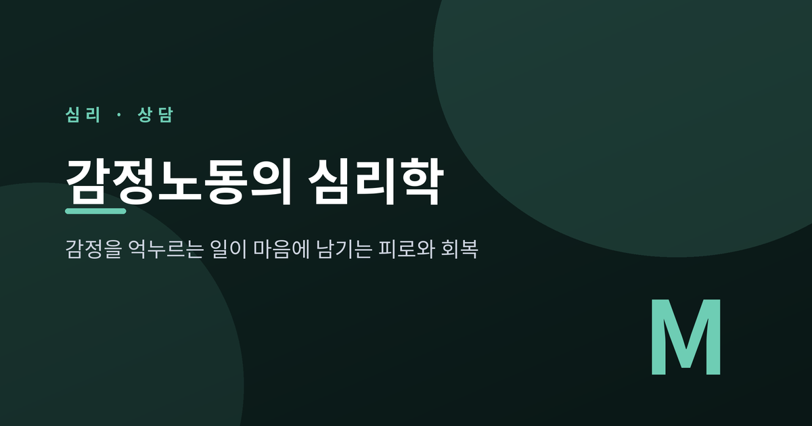
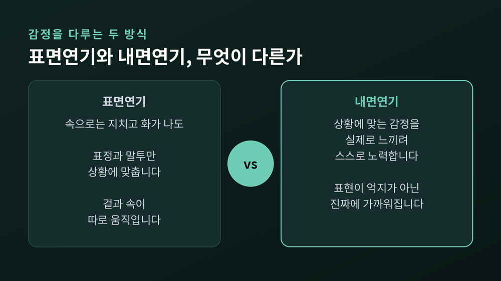
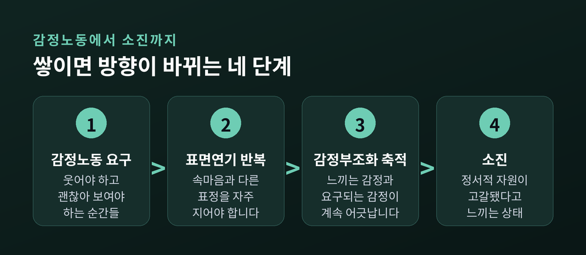
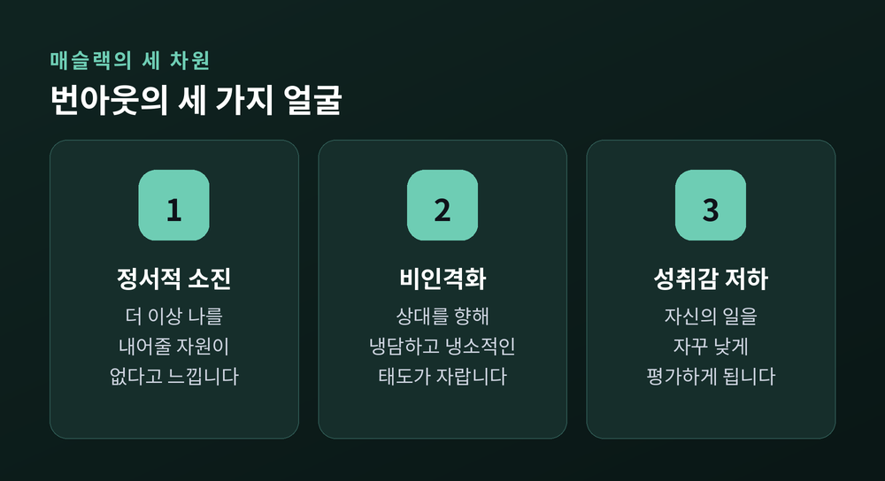
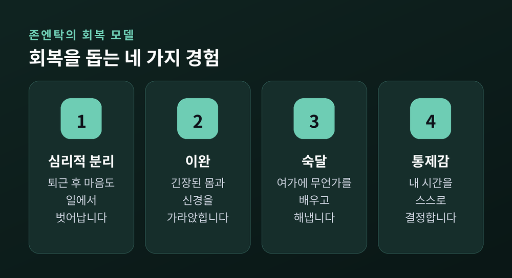
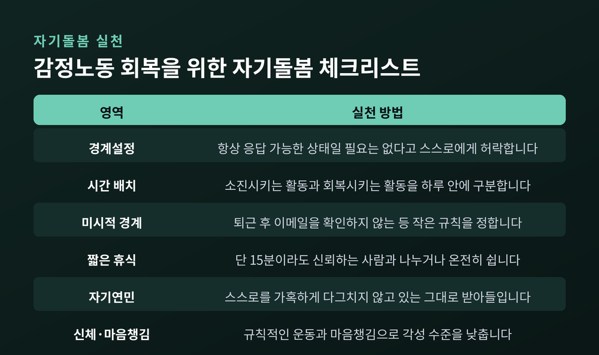

이번 글에서는 '감정노동'이라는 말이 심리학에서 정확히 무엇을 뜻하는지 정리해 보려 합니다. 표면연기와 내면연기가 어떻게 다른지, 그 차이가 왜 소진으로 이어지는지, 그리고 무엇이 회복에 도움이 되는지 함께 살펴보겠습니다.
감정노동이라는 개념은 1983년 사회학자 아를리 혹실드가 저서 《관리되는 마음》에서 처음 제시했습니다. 그는 항공 승무원과 종업원, 채권 추심원 등을 관찰하며, 이들이 임금을 받는 대가로 표정과 몸짓, 때로는 내면의 감정 상태까지 관리해야 한다는 사실에 주목했습니다.
감정노동은 단순히 '친절하게 웃는 일'이 아닙니다. 조직이 기대하는 감정을 보여주기 위해 자신의 진짜 감정을 조절하는 노력 전체를 가리킵니다. 화가 나도 웃어야 하고, 지쳐도 활기차 보여야 하는 자리라면, 그 사람은 이미 감정노동을 하고 있는 셈입니다.
혹실드는 감정을 다루는 방식을 두 가지로 구분했습니다.
표면연기는 실제로는 그 감정을 느끼지 않으면서, 겉모습만 상황에 맞게 바꾸는 것입니다. 속으로는 지치고 화가 나 있어도, 표정과 말투는 웃음을 유지합니다. 겉과 속이 따로 움직이는 셈입니다.
내면연기는 다릅니다. 상황에 맞는 감정을 실제로 느끼려고 스스로 노력하는 쪽입니다. 예를 들어 반복되는 불만 응대에 지친 상담원이 '이 사람도 지금 많이 답답했겠다'고 되새기며 진짜로 마음을 누그러뜨린다면, 이는 내면연기에 가깝습니다. 표현이 억지가 아니라 스스로 만들어낸 진짜 감정에 더 가까워지는 과정입니다.

두 방식은 결과도 다르게 나타납니다. 여러 연구를 종합한 분석에서 표면연기는 소진과 뚜렷한 정적 상관을 보인 반면, 내면연기는 오히려 소진과 반대 방향의 상관을 보였습니다. 다만 내면연기가 소진을 완전히 막아주는 만능 해법인지에 대해서는 연구마다 결론이 조금씩 갈립니다. 스트레스 예측에서는 표면연기만 유의했고 내면연기는 유의하지 않았다는 결과도 있습니다. 그래서 "내면연기가 표면연기보다 안전한 편이지만, 그 자체가 완전한 방패는 아니다"라는 정도로 이해하는 것이 정확합니다.
조직심리학자 디트마르 자프는 감정노동을 구성하는 또 하나의 요소로 '감정부조화'를 제시했습니다. 실제로 느끼는 감정과, 조직이나 상황이 요구하는 감정 사이의 어긋남을 뜻합니다.
억지로 웃어야 하는 순간이 하루에 몇 번쯤이면 크게 문제되지 않을 수 있습니다. 그러나 그 어긋남이 매일, 여러 시간 쌓이면 이야기가 달라집니다. 원하지 않는 감정을 표현하는 일에는 심리적 노력과 각성이 필요하고, 이는 눈에 보이지 않게 정서적 자원을 갉아먹습니다. 요구되는 감정과 실제 감정 사이의 거리가 클수록, 스트레스와 소진, 그리고 '내가 나 같지 않다'는 느낌이 커지는 경향이 확인됩니다.
감정부조화가 오래 쌓이면 흔히 소진, 이른바 번아웃으로 이어집니다. 번아웃 연구의 대표 학자인 크리스티나 매슬랙은 이를 세 가지 차원으로 설명합니다.

첫째는 정서적 소진입니다. 더 이상 자신을 내어줄 정서적 자원이 남지 않았다고 느끼는 상태입니다. 둘째는 비인격화입니다. 상대를 향해 냉담하고 냉소적인 태도가 자기도 모르게 자라나는 것입니다. 셋째는 개인적 성취감 저하입니다. 자신의 일을 자꾸 낮게 평가하게 되는 흐름입니다.

여러 직군을 아우른 메타분석에서는 감정노동이 특히 정서적 소진과 비인격화에 강하게 연결된다는 결과가 반복적으로 확인됐습니다. 표면연기를 오래, 자주 반복할수록 이 흐름에 놓이기 쉽다는 뜻입니다.
이런 흐름은 서비스직에만 국한되지 않습니다. 콜센터 상담원, 간호사, 교사, 돌봄 종사자, 상담가처럼 사람을 상대하는 일이라면 어느 자리에서든 나타날 수 있습니다. 흥미로운 점은, 감정노동이 고객뿐 아니라 동료를 향한 표면연기에서도 소진과 연결된다는 연구 결과입니다. 겉으로 괜찮은 척하는 대상이 손님이든 동료든, 마음이 치르는 비용은 비슷하게 쌓이는 셈입니다.
다행히 소진은 되돌릴 수 없는 종착지가 아닙니다. 조직심리학자 자비네 존엔탁은 업무 스트레스로부터의 회복을 설명하며, 네 가지 회복 경험을 제시했습니다.

심리적 분리는 퇴근 후 몸뿐 아니라 마음도 일에서 벗어나는 것입니다. 이완은 긴장된 몸과 신경을 가라앉히는 상태입니다. 숙달은 여가 시간에 무언가를 배우거나 해내며 얻는 성취감이고, 통제감은 자신의 시간을 스스로 결정할 수 있다는 감각입니다.
여기서 눈여겨볼 점이 있습니다. 업무 스트레스가 클수록 퇴근 후에도 일에서 심리적으로 벗어나기 어려워지고, 그 실패가 다시 피로를 키우는 악순환이 나타날 수 있다는 것입니다. 그래서 회복은 저절로 되는 일이 아니라, 의도적으로 만들어야 하는 시간에 가깝습니다.
회복을 돕는 구체적인 방법들도 있습니다. 모두 일반적인 지침이며, 자신의 상황에 맞게 조정해 쓰시면 됩니다.

이 가운데 어느 하나만으로 소진이 완전히 사라지지는 않습니다. 다만 작은 경계와 짧은 회복의 시간이 매일 쌓이면, 감정을 다루는 데 드는 비용을 조금씩 줄여갈 수 있습니다.
마지막으로 한 가지만 덧붙이겠습니다.
감정을 다루는 일도 엄연한 노동입니다. "그 정도는 참아야 한다"는 말로 넘기기보다, 마음이 치르는 비용을 있는 그대로 인정하는 데서 회복은 시작됩니다.
물론 여기서 다룬 내용은 일반적인 심리학 개념과 대처 전략을 소개한 것으로, 특정 개인의 상태를 진단하거나 처방하는 글이 아닙니다. 감정노동으로 인한 피로나 소진이 오래 지속되어 일상생활이 어렵게 느껴지신다면, 이 글의 정보만으로 판단하지 마시고 정신건강의학과나 심리상담 전문가를 찾아 도움을 받으시길 권합니다. 전문가와의 상담은 약함의 표시가 아니라, 자신을 돌보는 또 하나의 방법입니다.